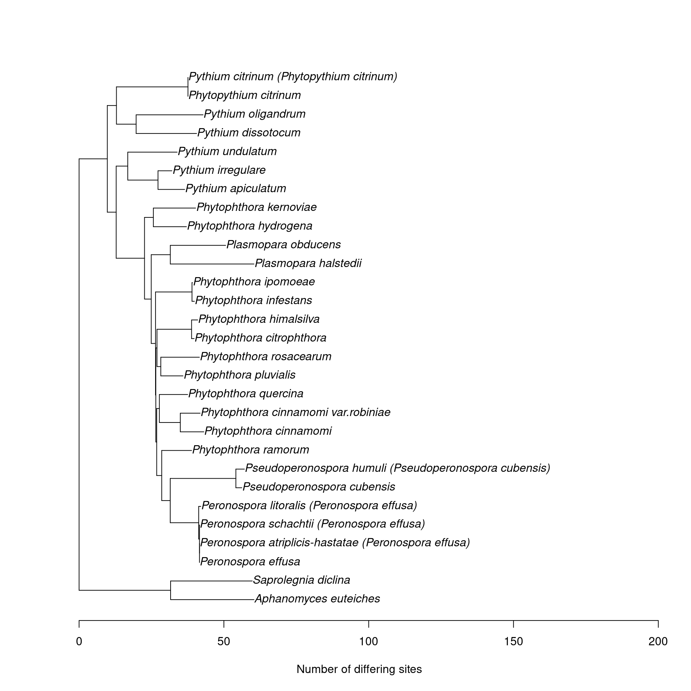
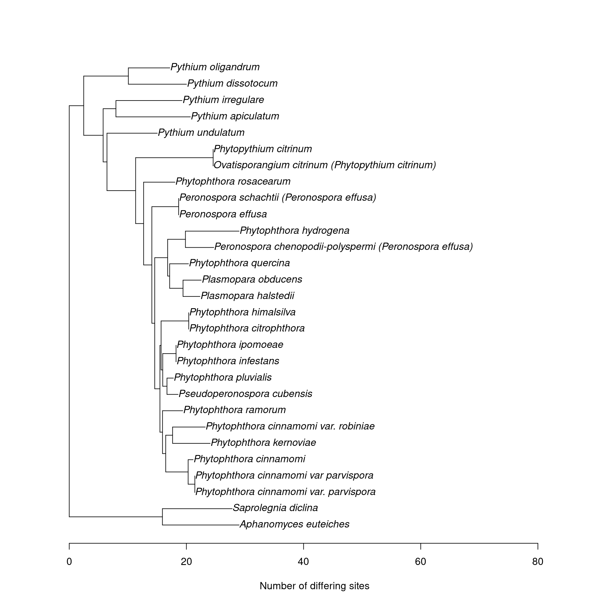

dada2 requires a special format for assigning taxonomy using a reference database. Also, we are using two different loci and amplifying both fungi and oomycetes, so we will need a reference database for each locus. The databases should have a format like:
>Kingom;Phylum;Class;Order;Family;Genus;Species;Reference
ACGAATGTGAAGTAA......Where, “Reference” is a database-specific ID for each sequence, since there can be multiple sequences for a single species. I will start the taxonomy at the Domain of Eukaryota, since it is shared with fungi.
seed <- 1
set.seed(seed)library(dada2)
library(metacoder)
library(purrr)
library(readr)
library(stringr)
library(tibble)
library(taxize)
library(dplyr)
library(DT)
library(ape)Any data generated by this analysis that is used in other analyses is stored in intermediate_data. The formatted reference database FASTA files will be stored here.
formatted_ref_dir <- file.path("intermediate_data", "reference_databases")
if (!dir.exists(formatted_ref_dir)) {
dir.create(formatted_ref_dir, recursive = TRUE)
}The rps10 database described by the associated publication will be used to assign taxonomy to ASVs/OTUs for the the rps10 MiSeq sequences. Any unidentified sequences will be blasted to genbank for identification when analyzing non-target amplification, so no non-target sequences will be added here. The sequences for species used in the mock community are already included in this database.
rps10_db <- read_fasta(file.path("raw_data", "reference_databases", "2020-11-3_release_2_rps10.fasta"))
rps10_data <- str_match(names(rps10_db), pattern = "name=(.+)\\|strain=(.+)\\|ncbi_acc=(.+)\\|ncbi_taxid=(.+)\\|oodb_id=(.+)\\|taxonomy=(.+)$")
colnames(rps10_data) <- c("header", "name", "strain", "ncbi_acc", "ncbi_taxid", "oodb_id", "taxonomy")
rps10_data <- as_tibble(rps10_data)
datatable(rps10_data)Lets remove the “cellular_organisms” root:
rps10_data$taxonomy <- gsub(rps10_data$taxonomy, pattern = 'cellular_organisms;', replacement = '', fixed = TRUE)
head(rps10_data$taxonomy)## [1] "Eukaryota;Stramenopiles;Oomycetes;Saprolegniales;Saprolegniaceae;Achlya_hypogyna"
## [2] "Eukaryota;Stramenopiles;Oomycetes;Albuginaceae;Albuginales;Albugo_laibachii"
## [3] "Eukaryota;Stramenopiles;Oomycetes;Saprolegniales;Saprolegniaceae;Aphanomyces_astaci"
## [4] "Eukaryota;Stramenopiles;Oomycetes;Saprolegniales;Saplolegniaceae;Aphanomyces_astaci"
## [5] "Eukaryota;Stramenopiles;Oomycetes;Saprolegniales;Saplolegniaceae;Aphanomyces_astaci"
## [6] "Eukaryota;Stramenopiles;Oomycetes;Saprolegniales;Saplolegniaceae;Aphanomyces_cladogamus"and add a “Heterokontophyta” rank, so it has the same number of ranks as the ITS database (see below):
rps10_data$taxonomy <- gsub(rps10_data$taxonomy, pattern = 'Eukaryota;', replacement = 'Eukaryota;Heterokontophyta;', fixed = TRUE)
head(rps10_data$taxonomy)## [1] "Eukaryota;Heterokontophyta;Stramenopiles;Oomycetes;Saprolegniales;Saprolegniaceae;Achlya_hypogyna"
## [2] "Eukaryota;Heterokontophyta;Stramenopiles;Oomycetes;Albuginaceae;Albuginales;Albugo_laibachii"
## [3] "Eukaryota;Heterokontophyta;Stramenopiles;Oomycetes;Saprolegniales;Saprolegniaceae;Aphanomyces_astaci"
## [4] "Eukaryota;Heterokontophyta;Stramenopiles;Oomycetes;Saprolegniales;Saplolegniaceae;Aphanomyces_astaci"
## [5] "Eukaryota;Heterokontophyta;Stramenopiles;Oomycetes;Saprolegniales;Saplolegniaceae;Aphanomyces_astaci"
## [6] "Eukaryota;Heterokontophyta;Stramenopiles;Oomycetes;Saprolegniales;Saplolegniaceae;Aphanomyces_cladogamus"This taxonomy has the genus and species joined together as a single level. I will split them into their own levels:
binomial <- map_chr(str_split(rps10_data$taxonomy, pattern = ';'), `[`, 7)
genus <- map_chr(str_split(binomial, pattern = '_'), `[`, 1)
unique(genus)## [1] "Achlya" "Albugo" "Aphanomyces"
## [4] "Bremia" "Halophytophthora" "Hyaloperonospora"
## [7] "Perofascia" "Peronosclerospora" "Peronospora"
## [10] "Phytophthora" "Phytopythium" "Plasmopara"
## [13] "Pseudoperonospora" "Pythium" "Salisapilia"
## [16] "Saprolegnia" "Sclerospora" "Thraustotheca"
## [19] "Lagena" "Lagenidium"rps10_data$taxonomy <- map_chr(seq_along(rps10_data$taxonomy), function(index) {
sub(rps10_data$taxonomy[index], pattern = binomial[index], replacement = paste0(genus[index], ';', binomial[index]))
})
head(rps10_data$taxonomy)## [1] "Eukaryota;Heterokontophyta;Stramenopiles;Oomycetes;Saprolegniales;Saprolegniaceae;Achlya;Achlya_hypogyna"
## [2] "Eukaryota;Heterokontophyta;Stramenopiles;Oomycetes;Albuginaceae;Albuginales;Albugo;Albugo_laibachii"
## [3] "Eukaryota;Heterokontophyta;Stramenopiles;Oomycetes;Saprolegniales;Saprolegniaceae;Aphanomyces;Aphanomyces_astaci"
## [4] "Eukaryota;Heterokontophyta;Stramenopiles;Oomycetes;Saprolegniales;Saplolegniaceae;Aphanomyces;Aphanomyces_astaci"
## [5] "Eukaryota;Heterokontophyta;Stramenopiles;Oomycetes;Saprolegniales;Saplolegniaceae;Aphanomyces;Aphanomyces_astaci"
## [6] "Eukaryota;Heterokontophyta;Stramenopiles;Oomycetes;Saprolegniales;Saplolegniaceae;Aphanomyces;Aphanomyces_cladogamus"I will also add a “rank” for the name of the database and reference sequence, using the index as ID:
rps10_data$taxonomy <- paste0(rps10_data$taxonomy, ';', 'oodb_', seq_along(rps10_data$taxonomy))
head(rps10_data$taxonomy)## [1] "Eukaryota;Heterokontophyta;Stramenopiles;Oomycetes;Saprolegniales;Saprolegniaceae;Achlya;Achlya_hypogyna;oodb_1"
## [2] "Eukaryota;Heterokontophyta;Stramenopiles;Oomycetes;Albuginaceae;Albuginales;Albugo;Albugo_laibachii;oodb_2"
## [3] "Eukaryota;Heterokontophyta;Stramenopiles;Oomycetes;Saprolegniales;Saprolegniaceae;Aphanomyces;Aphanomyces_astaci;oodb_3"
## [4] "Eukaryota;Heterokontophyta;Stramenopiles;Oomycetes;Saprolegniales;Saplolegniaceae;Aphanomyces;Aphanomyces_astaci;oodb_4"
## [5] "Eukaryota;Heterokontophyta;Stramenopiles;Oomycetes;Saprolegniales;Saplolegniaceae;Aphanomyces;Aphanomyces_astaci;oodb_5"
## [6] "Eukaryota;Heterokontophyta;Stramenopiles;Oomycetes;Saprolegniales;Saplolegniaceae;Aphanomyces;Aphanomyces_cladogamus;oodb_6"Finally, add a trailing ; to conform to the dada2 examples:
rps10_data$taxonomy <- paste0(rps10_data$taxonomy, ';')
head(rps10_data$taxonomy)## [1] "Eukaryota;Heterokontophyta;Stramenopiles;Oomycetes;Saprolegniales;Saprolegniaceae;Achlya;Achlya_hypogyna;oodb_1;"
## [2] "Eukaryota;Heterokontophyta;Stramenopiles;Oomycetes;Albuginaceae;Albuginales;Albugo;Albugo_laibachii;oodb_2;"
## [3] "Eukaryota;Heterokontophyta;Stramenopiles;Oomycetes;Saprolegniales;Saprolegniaceae;Aphanomyces;Aphanomyces_astaci;oodb_3;"
## [4] "Eukaryota;Heterokontophyta;Stramenopiles;Oomycetes;Saprolegniales;Saplolegniaceae;Aphanomyces;Aphanomyces_astaci;oodb_4;"
## [5] "Eukaryota;Heterokontophyta;Stramenopiles;Oomycetes;Saprolegniales;Saplolegniaceae;Aphanomyces;Aphanomyces_astaci;oodb_5;"
## [6] "Eukaryota;Heterokontophyta;Stramenopiles;Oomycetes;Saprolegniales;Saplolegniaceae;Aphanomyces;Aphanomyces_cladogamus;oodb_6;"and remove any white space:
rps10_data$taxonomy <- trimws(rps10_data$taxonomy)
rps10_db <- trimws(rps10_db)Lets check that the taxonomy is now formatted as expected:
stopifnot(all(str_count(rps10_data$taxonomy, pattern = ";") == 9))We can then associate these classifications with the sequences they were derived from as save it as a new fasta file:
rps10_ref_path <- file.path(formatted_ref_dir, "rps10_reference_db.fa")
paste0(">", rps10_data$taxonomy, "\n", rps10_db) %>%
write_lines(file = rps10_ref_path)Lets make a table of the number of sequences in each genus:
genus_count <- table(map_chr(strsplit(rps10_data$name, split = '_'), `[`, 1))
count_table <- as.data.frame(genus_count, stringsAsFactors = FALSE)
count_table <- as_tibble(count_table)
names(count_table) <- c('Genus', 'Number of sequences')
count_table## # A tibble: 20 x 2
## Genus `Number of sequences`
## <chr> <int>
## 1 Achlya 1
## 2 Albugo 1
## 3 Aphanomyces 13
## 4 Bremia 3
## 5 Halophytophthora 9
## 6 Hyaloperonospora 1
## 7 Lagena 1
## 8 Lagenidium 2
## 9 Perofascia 1
## 10 Peronosclerospora 4
## 11 Peronospora 73
## 12 Phytophthora 509
## 13 Phytopythium 25
## 14 Plasmopara 5
## 15 Pseudoperonospora 3
## 16 Pythium 226
## 17 Salisapilia 4
## 18 Saprolegnia 3
## 19 Sclerospora 1
## 20 Thraustotheca 1write_csv(count_table, file = file.path("results", "rps10_genus_count_table.csv"))I will use a database which is a combination of the sequences from Robideau et al. (2011), PhytophthoraDB, and UNITE. I will also add some sequences for the mock community that we sequenced to make sure they are included.
These are sequences from a study that did a phylogeny of all oomycetes using ITS and COX.
rob_2011_seqs <- read_fasta(file.path('raw_data', 'reference_databases', 'robideau_2011_its_database.fa'))
rob_2011 <- extract_tax_data(names(rob_2011_seqs), regex = "(.*)", key = "class", class_sep = "|") %>%
filter_taxa(!is_leaf) %>%
filter_taxa(! grepl(taxon_names, pattern = '^unclassified_'))## Warning: `as.tbl()` is deprecated as of dplyr 1.0.0.
## Please use `tibble::as_tibble()` instead.
## This warning is displayed once every 8 hours.
## Call `lifecycle::last_warnings()` to see where this warning was generated.stopifnot(all(rob_2011$data$tax_data$input == names(rob_2011_seqs)))
rob_2011$data$seqs <- setNames(rob_2011_seqs, rob_2011$data$tax_data$taxon_id)
rob_2011$data <- rob_2011$data["seqs"]
rob_2011## <Taxmap>
## 398 taxa: aab. Eukaryota ... cgm. Saprolegnia_sp._CAL-2011b
## 398 edges: NA->aab, aab->aac, aac->aad ... abi->bzq, abt->cgm
## 1 data sets:
## seqs: a named vector of 'character' with 1202 items
## abv. CCACACCAAAAAAA[truncated] ... apd. CCACACCAAAAAAA[truncated]
## 0 functions:UNITE contains fungal species and some oomycetes.
unite <- parse_unite_general(file = file.path('raw_data', 'reference_databases', 'sh_general_release_dynamic_all_02.02.2019.fasta'))
unite## <Taxmap>
## 49882 taxa: aaab. Viridiplantae ... cvuo. Leucosporidium_scottii
## 49882 edges: NA->aaab, NA->aaac ... anpk->cvun, anpk->cvuo
## 2 data sets:
## tax_data:
## # A tibble: 63,422 x 6
## taxon_id organism acc_num unite_id unite_type unite_seq
## <chr> <chr> <chr> <chr> <chr> <chr>
## 1 atfn Brosimum_… AY6354… SH16418… reps CGTAGGTGAACCT…
## 2 atfo Ochroma_p… AY6355… SH16418… reps TCGTAGTGAACCT…
## 3 atfp Tortula_p… GQ3397… SH16418… reps CACACACAAAGTT…
## # … with 63,419 more rows
## class_data:
## # A tibble: 443,954 x 4
## taxon_id input_index unite_rank name
## <chr> <int> <chr> <chr>
## 1 aaab 1 k Viridiplantae
## 2 aaaw 1 p Anthophyta
## 3 aaeb 1 c Eudicotyledonae
## # … with 443,951 more rows
## 0 functions:Phytophthora DB contains phytophthora sequences.
phyto_db_seqs <- read_fasta(file.path('raw_data', 'reference_databases', 'phytophthora_db_its_database.fa'))
base_class <- lookup_tax_data('Phytophthora', type = 'taxon_name') %>% classifications() %>% tail(1)## Looking up classifications for 1 unique taxon names from database "ncbi"...## No ENTREZ API key provided
## Get one via taxize::use_entrez()
## See https://ncbiinsights.ncbi.nlm.nih.gov/2017/11/02/new-api-keys-for-the-e-utilities/## ══ 1 queries ═══════════════##
## Retrieving data for taxon 'Phytophthora'## ✓ Found: Phytophthora
## ══ Results ═════════════════
##
## ● Total: 1
## ● Found: 1
## ● Not Found: 0## No ENTREZ API key provided
## Get one via taxize::use_entrez()
## See https://ncbiinsights.ncbi.nlm.nih.gov/2017/11/02/new-api-keys-for-the-e-utilities/## phyto_db_class <- paste0(base_class, ';', str_match(names(phyto_db_seqs), '.+ \\((.+)\\)')[, 2])
phyto_db <- extract_tax_data(phyto_db_class, regex = "(.*)", key = "class", class_sep = ";") %>%
filter_taxa(taxon_names != 'cellular organisms')
phyto_db$data$seqs <- setNames(phyto_db_seqs, phyto_db$data$tax_data$taxon_id)
phyto_db$data <- phyto_db$data["seqs"]
phyto_db## <Taxmap>
## 110 taxa: ac. Eukaryota, ad. Sar ... eh. Phytophthora gallica
## 110 edges: NA->ac, ac->ad, ad->ae ... ai->ef, ai->eg, ai->eh
## 1 data sets:
## seqs: a named vector of 'character' with 340 items
## aj. CCACACCTAAAAAcT[truncated] ... eh. CCACACCTAAAAAAC[truncated]
## 0 functions:Not all the species used in the mock community have ITS1 sequences in the databases used so far. Here are counts of the number of sequences for each mock community member:
mc_data <- read_csv(file.path('raw_data', 'mock_community.csv'))##
## ── Column specification ────────────────────────────────────────────────────────
## cols(
## species = col_character(),
## concentration = col_double(),
## isolate = col_character(),
## growth_medium = col_character(),
## extraction_kit = col_character()
## )# mc_data$species <- gsub(mc_data$species, pattern = ' ', replacement = '_')
vapply(gsub(mc_data$species, pattern = ' ', replacement = '_'), FUN.VALUE = numeric(1), function(s) {
sum(agrepl(c(names(rob_2011_seqs), names(phyto_db_seqs), unite$data$tax_data$organism), pattern = s))
})## Aphanomyces_euteiches Peronospora_effusa
## 6 0
## Peronospora_schachtii Phytopythium_citrinum
## 0 0
## Phytophthora_cinnamomi Phytophthora_citrophthora
## 32 13
## Phytophthora_himalsilva Phytophthora_hydrogena
## 0 0
## Phytophthora_infestans Phytophthora_ipomoeae
## 27 6
## Phytophthora_kernoviae Phytophthora_pluvialis
## 10 0
## Phytophthora_quercina Phytophthora_ramorum
## 7 6
## Phytophthora_rosacearum Plasmopara_halstedii
## 2 1
## Plasmopara_obducens Pseudoperonospora_cubensis
## 1 1
## Pythium_apiculatum Pythium_dissotocum
## 1 3
## Pythium_irregulare Pythium_oligandrum
## 89 2
## Pythium_undulatum Saprolegnia_diclina
## 0 3I therefore included Sanger sequences of the mock community members produced for this study.
its_mc_seqs <- read_fasta(file.path('raw_data', 'reference_databases', 'mock_comm_its1_sanger.fasta'))
names(its_mc_seqs)## [1] "Aphanomyces euteiches MER4" "Peronospora effusa G61"
## [3] "Peronospora schachtii G97" "Phytophthora cinnamomi PCN18001"
## [5] "Phytophthora citrophthora PCR13002" "Phytophthora himalsilva P13015"
## [7] "Phytophthora hydrogena Ph162" "Phytophthora infestans T304"
## [9] "Phytophthora ipomoeae PI07097" "Phytophthora kernoviae PK05002"
## [11] "Phytophthora pluvialis SM14MAR-EMR" "Phytophthora quercina PH0711"
## [13] "Phytophthora ramorum PR07019" "Phytophthora rosacearum PH158"
## [15] "Phytopythium citrinum Py1642" "Plasmopara obducens MD154.4.4G"
## [17] "Pseudoperonospora cubensis MSU1" "Pythium apiculatum Py1627"
## [19] "Pythium irregulare SF63" "Pythium dissotocum PyD16001"
## [21] "Pythium oligandrum Py1988" "Pythium undulatum PyU16001"
## [23] "Saprolegnia diclina SD16001"This file does not have their full taxonomy, so I will use the taxonomy from the rps10 database for the same species:
names(its_mc_seqs) <- str_match(names(its_mc_seqs), pattern = '([A-z]+ [A-z]+) ?.*$')[, 2]
names(its_mc_seqs) <- gsub(names(its_mc_seqs), pattern = ' ', replacement = '_')
names(its_mc_seqs) <- map_chr(names(its_mc_seqs), function(n) {
tax <- rps10_data$taxonomy[grep(rps10_data$name, pattern = n)]
str_match(tax, pattern = paste0('^(.+', n, ').+$'))[1, 2] # match up until species name
})
head(names(its_mc_seqs))## [1] "Eukaryota;Heterokontophyta;Stramenopiles;Oomycetes;Saprolegniales;Saplolegniaceae;Aphanomyces;Aphanomyces_euteiches"
## [2] "Eukaryota;Heterokontophyta;Stramenopiles;Oomycetes;Peronosporales;Peronosporaceae;Peronospora;Peronospora_effusa"
## [3] "Eukaryota;Heterokontophyta;Stramenopiles;Oomycetes;Peronosporales;Peronosporaceae;Peronospora;Peronospora_schachtii"
## [4] "Eukaryota;Heterokontophyta;Stramenopiles;Oomycetes;Peronosporales;Peronosporaceae;Phytophthora;Phytophthora_cinnamomi"
## [5] "Eukaryota;Heterokontophyta;Stramenopiles;Oomycetes;Peronosporales;Peronosporaceae;Phytophthora;Phytophthora_citrophthora"
## [6] "Eukaryota;Heterokontophyta;Stramenopiles;Oomycetes;Peronosporales;Peronosporaceae;Phytophthora;Phytophthora_himalsilva"The Phytophthora DB and Robideau sequences have a similar taxonomy
rob_2011_seqs <- setNames(rob_2011$data$seqs, classifications(rob_2011)[names(rob_2011$data$seqs)])
head(names(rob_2011_seqs))## [1] "Eukaryota;Stramenopiles;Oomycetes;Saprolegniales;Saprolegniaceae;Achlya;Achlya_ambisexualis"
## [2] "Eukaryota;Stramenopiles;Oomycetes;Saprolegniales;Saprolegniaceae;Achlya;Achlya_ambisexualis"
## [3] "Eukaryota;Stramenopiles;Oomycetes;Saprolegniales;Saprolegniaceae;Achlya;Achlya_americana"
## [4] "Eukaryota;Stramenopiles;Oomycetes;Saprolegniales;Saprolegniaceae;Achlya;Achlya_aquatica"
## [5] "Eukaryota;Stramenopiles;Oomycetes;Saprolegniales;Saprolegniaceae;Achlya;Achlya_bisexualis"
## [6] "Eukaryota;Stramenopiles;Oomycetes;Saprolegniales;Saprolegniaceae;Achlya;Achlya_bisexualis"phyto_db_seqs <- setNames(phyto_db$data$seqs, classifications(phyto_db)[names(phyto_db$data$seqs)])
head(names(phyto_db_seqs))## [1] "Eukaryota;Sar;Stramenopiles;Oomycota;Peronosporales;Peronosporaceae;Phytophthora;Phytophthora infestans"
## [2] "Eukaryota;Sar;Stramenopiles;Oomycota;Peronosporales;Peronosporaceae;Phytophthora;Phytophthora infestans"
## [3] "Eukaryota;Sar;Stramenopiles;Oomycota;Peronosporales;Peronosporaceae;Phytophthora;Phytophthora infestans"
## [4] "Eukaryota;Sar;Stramenopiles;Oomycota;Peronosporales;Peronosporaceae;Phytophthora;Phytophthora infestans"
## [5] "Eukaryota;Sar;Stramenopiles;Oomycota;Peronosporales;Peronosporaceae;Phytophthora;Phytophthora infestans"
## [6] "Eukaryota;Sar;Stramenopiles;Oomycota;Peronosporales;Peronosporaceae;Phytophthora;Phytophthora infestans"But Unite is different:
unite_seqs <- setNames(unite$data$tax_data$unite_seq, classifications(unite)[unite$data$tax_data$taxon_id])
head(names(unite_seqs))## [1] "Viridiplantae;Anthophyta;Eudicotyledonae;Rosales;Moraceae;Brosimum;Brosimum_guianense"
## [2] "Viridiplantae;Anthophyta;Eudicotyledonae;Malvales;Malvaceae;Ochroma;Ochroma_pyramidale"
## [3] "Viridiplantae;Bryophyta;Bryopsida;Pottiales;Pottiaceae;Tortula;Tortula_platyphylla"
## [4] "Viridiplantae;Anthophyta;Eudicotyledonae;Laurales;Calycanthaceae;Calycanthus;Calycanthus_chinensis"
## [5] "Fungi;Ascomycota;Xylonomycetes;Symbiotaphrinales;Symbiotaphrinaceae;Symbiotaphrina;Symbiotaphrina_buchneri"
## [6] "Viridiplantae;Anthophyta;Monocotyledonae;Alismatales;Hydrocharitaceae;Hydrocharis;Hydrocharis_morsus-ranae"The Phytophthora DB and robideau sequences have a these ranks:
Domain, Kingdom, Class, Order, Family, Genus, Species
But Unite, there is also Phylum:
Kingdom, Phylum, Class, Order, Family, Genus, Species
In Unite, Stramenopiles is called Stramenopila and is considered a Kingdom.
I can make the two the same, by adding the Eukaryota Domain to Unite and the Phylum Heterokontophyta to the other two, making the ranks:
Domain, Kingdom, Phylum, Class, Order, Family, Genus, Species
names(unite_seqs) <- paste0('Eukaryota;', names(unite_seqs))
names(rob_2011_seqs) <- sub(names(rob_2011_seqs), pattern = ';Stramenopiles;',
replacement = ';Heterokontophyta;Stramenopiles;', fixed = TRUE)
names(phyto_db_seqs) <- sub(names(phyto_db_seqs), pattern = ';Stramenopiles;',
replacement = ';Heterokontophyta;Stramenopiles;', fixed = TRUE)
names(phyto_db_seqs) <- sub(names(phyto_db_seqs), pattern = ';Sar;',
replacement = ';', fixed = TRUE)The taxonomy of the sequences from our lab have already been put into this format.
The taxonomy now has the same number of ranks, but there are some differences in the classification of oomycetes in UNITE vs the other databases:
head(names(unite_seqs)[grepl(names(unite_seqs), pattern = 'Oomy')])## [1] "Eukaryota;Stramenopila;Oomycota;Oomycetes;Pythiales;Pythiaceae;Halophytophthora;Halophytophthora_sp"
## [2] "Eukaryota;Stramenopila;Oomycota;Oomycetes;Pythiales;Pythiaceae;Halophytophthora;Halophytophthora_sp"
## [3] "Eukaryota;Stramenopila;Oomycota;Oomycetes;Peronosporales;Peronosporaceae;Bremia;Bremia_lactucae"
## [4] "Eukaryota;Stramenopila;Oomycota;Oomycetes;Pythiales;Pythiaceae;Pythium;Pythium_sp"
## [5] "Eukaryota;Stramenopila;Oomycota;Oomycetes;Peronosporales;Peronosporaceae;Hyaloperonospora;Hyaloperonospora_erophilae"
## [6] "Eukaryota;Stramenopila;Oomycota;Oomycetes;Peronosporales;Peronosporaceae;Hyaloperonospora;Hyaloperonospora_sp"head(names(rob_2011_seqs))## [1] "Eukaryota;Heterokontophyta;Stramenopiles;Oomycetes;Saprolegniales;Saprolegniaceae;Achlya;Achlya_ambisexualis"
## [2] "Eukaryota;Heterokontophyta;Stramenopiles;Oomycetes;Saprolegniales;Saprolegniaceae;Achlya;Achlya_ambisexualis"
## [3] "Eukaryota;Heterokontophyta;Stramenopiles;Oomycetes;Saprolegniales;Saprolegniaceae;Achlya;Achlya_americana"
## [4] "Eukaryota;Heterokontophyta;Stramenopiles;Oomycetes;Saprolegniales;Saprolegniaceae;Achlya;Achlya_aquatica"
## [5] "Eukaryota;Heterokontophyta;Stramenopiles;Oomycetes;Saprolegniales;Saprolegniaceae;Achlya;Achlya_bisexualis"
## [6] "Eukaryota;Heterokontophyta;Stramenopiles;Oomycetes;Saprolegniales;Saprolegniaceae;Achlya;Achlya_bisexualis"head(names(phyto_db_seqs))## [1] "Eukaryota;Heterokontophyta;Stramenopiles;Oomycota;Peronosporales;Peronosporaceae;Phytophthora;Phytophthora infestans"
## [2] "Eukaryota;Heterokontophyta;Stramenopiles;Oomycota;Peronosporales;Peronosporaceae;Phytophthora;Phytophthora infestans"
## [3] "Eukaryota;Heterokontophyta;Stramenopiles;Oomycota;Peronosporales;Peronosporaceae;Phytophthora;Phytophthora infestans"
## [4] "Eukaryota;Heterokontophyta;Stramenopiles;Oomycota;Peronosporales;Peronosporaceae;Phytophthora;Phytophthora infestans"
## [5] "Eukaryota;Heterokontophyta;Stramenopiles;Oomycota;Peronosporales;Peronosporaceae;Phytophthora;Phytophthora infestans"
## [6] "Eukaryota;Heterokontophyta;Stramenopiles;Oomycota;Peronosporales;Peronosporaceae;Phytophthora;Phytophthora infestans"head(names(its_mc_seqs))## [1] "Eukaryota;Heterokontophyta;Stramenopiles;Oomycetes;Saprolegniales;Saplolegniaceae;Aphanomyces;Aphanomyces_euteiches"
## [2] "Eukaryota;Heterokontophyta;Stramenopiles;Oomycetes;Peronosporales;Peronosporaceae;Peronospora;Peronospora_effusa"
## [3] "Eukaryota;Heterokontophyta;Stramenopiles;Oomycetes;Peronosporales;Peronosporaceae;Peronospora;Peronospora_schachtii"
## [4] "Eukaryota;Heterokontophyta;Stramenopiles;Oomycetes;Peronosporales;Peronosporaceae;Phytophthora;Phytophthora_cinnamomi"
## [5] "Eukaryota;Heterokontophyta;Stramenopiles;Oomycetes;Peronosporales;Peronosporaceae;Phytophthora;Phytophthora_citrophthora"
## [6] "Eukaryota;Heterokontophyta;Stramenopiles;Oomycetes;Peronosporales;Peronosporaceae;Phytophthora;Phytophthora_himalsilva"So I will change them to be all the same as much as possible:
names(unite_seqs) <- sub(names(unite_seqs), fixed = TRUE,
pattern = 'Stramenopila;Oomycota',
replacement = 'Heterokontophyta;Stramenopiles')
names(phyto_db_seqs) <- sub(names(phyto_db_seqs), fixed = TRUE,
pattern = 'Oomycota',
replacement = 'Oomycetes')Now they should be the same:
head(names(unite_seqs)[grepl(names(unite_seqs), pattern = 'Oomy')])## [1] "Eukaryota;Heterokontophyta;Stramenopiles;Oomycetes;Pythiales;Pythiaceae;Halophytophthora;Halophytophthora_sp"
## [2] "Eukaryota;Heterokontophyta;Stramenopiles;Oomycetes;Pythiales;Pythiaceae;Halophytophthora;Halophytophthora_sp"
## [3] "Eukaryota;Heterokontophyta;Stramenopiles;Oomycetes;Peronosporales;Peronosporaceae;Bremia;Bremia_lactucae"
## [4] "Eukaryota;Heterokontophyta;Stramenopiles;Oomycetes;Pythiales;Pythiaceae;Pythium;Pythium_sp"
## [5] "Eukaryota;Heterokontophyta;Stramenopiles;Oomycetes;Peronosporales;Peronosporaceae;Hyaloperonospora;Hyaloperonospora_erophilae"
## [6] "Eukaryota;Heterokontophyta;Stramenopiles;Oomycetes;Peronosporales;Peronosporaceae;Hyaloperonospora;Hyaloperonospora_sp"head(names(rob_2011_seqs))## [1] "Eukaryota;Heterokontophyta;Stramenopiles;Oomycetes;Saprolegniales;Saprolegniaceae;Achlya;Achlya_ambisexualis"
## [2] "Eukaryota;Heterokontophyta;Stramenopiles;Oomycetes;Saprolegniales;Saprolegniaceae;Achlya;Achlya_ambisexualis"
## [3] "Eukaryota;Heterokontophyta;Stramenopiles;Oomycetes;Saprolegniales;Saprolegniaceae;Achlya;Achlya_americana"
## [4] "Eukaryota;Heterokontophyta;Stramenopiles;Oomycetes;Saprolegniales;Saprolegniaceae;Achlya;Achlya_aquatica"
## [5] "Eukaryota;Heterokontophyta;Stramenopiles;Oomycetes;Saprolegniales;Saprolegniaceae;Achlya;Achlya_bisexualis"
## [6] "Eukaryota;Heterokontophyta;Stramenopiles;Oomycetes;Saprolegniales;Saprolegniaceae;Achlya;Achlya_bisexualis"head(names(phyto_db_seqs))## [1] "Eukaryota;Heterokontophyta;Stramenopiles;Oomycetes;Peronosporales;Peronosporaceae;Phytophthora;Phytophthora infestans"
## [2] "Eukaryota;Heterokontophyta;Stramenopiles;Oomycetes;Peronosporales;Peronosporaceae;Phytophthora;Phytophthora infestans"
## [3] "Eukaryota;Heterokontophyta;Stramenopiles;Oomycetes;Peronosporales;Peronosporaceae;Phytophthora;Phytophthora infestans"
## [4] "Eukaryota;Heterokontophyta;Stramenopiles;Oomycetes;Peronosporales;Peronosporaceae;Phytophthora;Phytophthora infestans"
## [5] "Eukaryota;Heterokontophyta;Stramenopiles;Oomycetes;Peronosporales;Peronosporaceae;Phytophthora;Phytophthora infestans"
## [6] "Eukaryota;Heterokontophyta;Stramenopiles;Oomycetes;Peronosporales;Peronosporaceae;Phytophthora;Phytophthora infestans"head(names(its_mc_seqs))## [1] "Eukaryota;Heterokontophyta;Stramenopiles;Oomycetes;Saprolegniales;Saplolegniaceae;Aphanomyces;Aphanomyces_euteiches"
## [2] "Eukaryota;Heterokontophyta;Stramenopiles;Oomycetes;Peronosporales;Peronosporaceae;Peronospora;Peronospora_effusa"
## [3] "Eukaryota;Heterokontophyta;Stramenopiles;Oomycetes;Peronosporales;Peronosporaceae;Peronospora;Peronospora_schachtii"
## [4] "Eukaryota;Heterokontophyta;Stramenopiles;Oomycetes;Peronosporales;Peronosporaceae;Phytophthora;Phytophthora_cinnamomi"
## [5] "Eukaryota;Heterokontophyta;Stramenopiles;Oomycetes;Peronosporales;Peronosporaceae;Phytophthora;Phytophthora_citrophthora"
## [6] "Eukaryota;Heterokontophyta;Stramenopiles;Oomycetes;Peronosporales;Peronosporaceae;Phytophthora;Phytophthora_himalsilva"head(rps10_data$taxonomy)## [1] "Eukaryota;Heterokontophyta;Stramenopiles;Oomycetes;Saprolegniales;Saprolegniaceae;Achlya;Achlya_hypogyna;oodb_1;"
## [2] "Eukaryota;Heterokontophyta;Stramenopiles;Oomycetes;Albuginaceae;Albuginales;Albugo;Albugo_laibachii;oodb_2;"
## [3] "Eukaryota;Heterokontophyta;Stramenopiles;Oomycetes;Saprolegniales;Saprolegniaceae;Aphanomyces;Aphanomyces_astaci;oodb_3;"
## [4] "Eukaryota;Heterokontophyta;Stramenopiles;Oomycetes;Saprolegniales;Saplolegniaceae;Aphanomyces;Aphanomyces_astaci;oodb_4;"
## [5] "Eukaryota;Heterokontophyta;Stramenopiles;Oomycetes;Saprolegniales;Saplolegniaceae;Aphanomyces;Aphanomyces_astaci;oodb_5;"
## [6] "Eukaryota;Heterokontophyta;Stramenopiles;Oomycetes;Saprolegniales;Saplolegniaceae;Aphanomyces;Aphanomyces_cladogamus;oodb_6;"I will add a “rank” for the reference too, with the name of the database the sequence came from and the source database index:
names(unite_seqs) <- paste0(names(unite_seqs), ';', 'unite_', seq_along(unite_seqs))
names(rob_2011_seqs) <- paste0(names(rob_2011_seqs), ';', 'rob2011_', seq_along(rob_2011_seqs))
names(phyto_db_seqs) <- paste0(names(phyto_db_seqs), ';', 'phytodb_', seq_along(phyto_db_seqs))
names(its_mc_seqs) <- paste0(names(its_mc_seqs), ';', 'mock_', seq_along(its_mc_seqs))
its1_seqs <- c(unite_seqs, rob_2011_seqs, phyto_db_seqs, its_mc_seqs)Note that the ID is an index of the sequence in the particular version of the database used. Since none of the sequences were filtered out before this was assigned, this can be used to identify the particular sequence in a particular database.
Some of the databases (UNITE I think) has unidentified sequences. I will remove these, so that they are not used when assigning ASVs and prevent a less good match to a more informative sequence:
its1_seqs <- its1_seqs[! grepl(names(its1_seqs), pattern = 'unidentified')]Add combined index:
names(its1_seqs) <- paste0(names(its1_seqs), '_', seq_along(its1_seqs))
head(names(its1_seqs))## [1] "Eukaryota;Viridiplantae;Anthophyta;Eudicotyledonae;Rosales;Moraceae;Brosimum;Brosimum_guianense;unite_1_1"
## [2] "Eukaryota;Viridiplantae;Anthophyta;Eudicotyledonae;Malvales;Malvaceae;Ochroma;Ochroma_pyramidale;unite_2_2"
## [3] "Eukaryota;Viridiplantae;Bryophyta;Bryopsida;Pottiales;Pottiaceae;Tortula;Tortula_platyphylla;unite_3_3"
## [4] "Eukaryota;Viridiplantae;Anthophyta;Eudicotyledonae;Laurales;Calycanthaceae;Calycanthus;Calycanthus_chinensis;unite_4_4"
## [5] "Eukaryota;Fungi;Ascomycota;Xylonomycetes;Symbiotaphrinales;Symbiotaphrinaceae;Symbiotaphrina;Symbiotaphrina_buchneri;unite_5_5"
## [6] "Eukaryota;Viridiplantae;Anthophyta;Monocotyledonae;Alismatales;Hydrocharitaceae;Hydrocharis;Hydrocharis_morsus-ranae;unite_6_6"This is the index of the sequence in the combined reference datbase. No filtering should be done to the combined database after this. Replace spaces with underscores:
names(its1_seqs) <- gsub(names(its1_seqs), pattern = " ", replacement = "_")Make sure they end in a ;, like the example databases for dada2
no_ending_semicolon <- ! endsWith(names(its1_seqs), ';')
names(its1_seqs)[no_ending_semicolon] <- paste0(names(its1_seqs)[no_ending_semicolon], ";")Make sure everything is uppercase for consistently:
its1_seqs <- toupper(its1_seqs)and that there is not extra whitespace in header or sequence:
its1_seqs <- trimws(its1_seqs)
names(its1_seqs) <- trimws(names(its1_seqs))I will check for any sequences with ambiguity codes:
sum(! grepl(its1_seqs, pattern = '^[AGCTagct]*$'))## [1] 5187Check for problems
stopifnot(all(str_count(names(its1_seqs), pattern = ";") == 9))
stopifnot(all(nchar(its1_seqs) > 100))
stopifnot(! any(grepl(names(its1_seqs), pattern = 'NA')))And finally save the results in a FASTA file
its_ref_path <- file.path(formatted_ref_dir, "its1_reference_db.fa")
paste0(">", names(its1_seqs), "\n", its1_seqs) %>%
write_lines(its_ref_path)Many of the mock community members have synonyms and since multiple databases are used, multiple names might be used for the same taxa. Therefore, I will look up the synonyms of taxa used in the mock community from COL. The code below used to work, but the current version of taxize has stopped supporting COL:
mc_data <- read_csv(file.path('raw_data', 'mock_community.csv'))
mc_syn_data <- as_tibble(synonyms_df(synonyms(mc_data$species, db = "col")))
mc_syn_data <- rename(mc_syn_data, mc_name = .id, col_id = id, syn_name = name)
write_csv(mc_syn_data, file = file.path('intermediate_data', 'mock_comm_synonyms.csv'))So I took the result of that code when it did work and load it here:
mc_syn_data <- read_csv(file.path('raw_data', 'mock_comm_synonyms.csv'))##
## ── Column specification ────────────────────────────────────────────────────────
## cols(
## mc_name = col_character(),
## col_id = col_character(),
## syn_name = col_character(),
## rank = col_character(),
## name_status = col_character(),
## genus = col_character(),
## subgenus = col_logical(),
## species = col_character(),
## infraspecies_marker = col_character(),
## infraspecies = col_character(),
## author = col_character(),
## record_scrutiny_date = col_logical(),
## online_resource = col_logical(),
## is_extinct = col_double(),
## name_html = col_character(),
## url = col_character()
## )datatable(mc_syn_data)In order to fairly evaluate the performance of each primer pair / locus, we need to know if the mock community sequences are actually present in the reference databases.
its_seqs <- read_fasta(its_ref_path)
rps10_seqs <- read_fasta(rps10_ref_path)I will use agrep instead of grep to allow for any misspellings.
is_in_db <- function(species, db, allow_ambig = TRUE) {
names(db) <- gsub(names(db), pattern = '_', replacement = ' ')
mc_syn_data <- readr::read_csv(file.path('raw_data', 'mock_comm_synonyms.csv'), col_types = cols())
out <- purrr::map_lgl(species, function(s) {
sp_names <- unique(c(s, mc_syn_data$syn_name[mc_syn_data$mc_name == s]))
sp_names <- gsub(sp_names, pattern = '_', replacement = ' ')
if (allow_ambig) {
out <- any(vapply(sp_names, FUN.VALUE = logical(1), function(name) {
any(grepl(names(db), pattern = name, ignore.case = TRUE))
}))
} else {
out <- any(vapply(sp_names, FUN.VALUE = logical(1), function(name) {
any(grepl(names(db), pattern = name, ignore.case = TRUE) & grepl(db, pattern = '^[AGCTagct]*$'))
}))
}
return(out)
})
names(out) <- species
out
}
mc_data$in_its_db <- is_in_db(mc_data$species, its_seqs)
mc_data$in_rps10_db <- is_in_db(mc_data$species, rps10_seqs)Some of the methods used to assign taxonomy cannot use sequences with ambiguity codes, so I will check for sequences with no ambiguity codes.
mc_data$in_its_db_no_ambig <- is_in_db(mc_data$species, its_seqs, allow_ambig = FALSE)
mc_data$in_rps10_db_no_ambig <- is_in_db(mc_data$species, rps10_seqs, allow_ambig = FALSE)I will save a version of the mock community data that has these results included for other analyses
write_csv(mc_data, file = file.path('intermediate_data', 'mock_community.csv'))
datatable(mc_data)All the mock community species have sequences for both rps10 and ITS1 in the reference database:
stopifnot(all(mc_data$in_its_db & mc_data$in_rps10_db))This might be useful for seeing which species cant be distinguished. Note that this is the phylogeny of the whole reference sequence, not just the amplicon.
nj_tree <- function(seqs, ...) {
# Align sequences:
aligned <- seqs %>%
insect::char2dna() %>%
ips::mafft(method = 'localpair', exec = '/usr/bin/mafft')
# Make distance matrix
dist <- ape::dist.dna(aligned, ...)
# Make tree
tree <- ape::nj(dist)
tree <- ape::ladderize(tree)
tree <- phangorn::midpoint(tree)
tree
}
is_in_mc <- function(db) {
mc_sp <- unique(c(mc_data$species, mc_syn_data$syn_name))
names(db) <- gsub(names(db), pattern = '_', replacement = ' ')
grepl(names(db), pattern = paste0(mc_sp, collapse = '|'))
}
plot_mc_tree <- function(db) {
seqs <- db[is_in_mc(db)]
db_names <- str_match(names(seqs), pattern = '.+;(.+);.+;$')[, 2]
db_names <- gsub(db_names, pattern = '_', replacement = ' ')
mc_names <- mc_syn_data$mc_name[match(db_names, mc_syn_data$syn_name)]
names(seqs) <- db_names
has_syn <- ! is.na(mc_names) & mc_names != db_names
names(seqs)[has_syn] <- paste0(names(seqs[has_syn]), ' (', mc_names[has_syn], ')')
seqs <- seqs[! duplicated(names(seqs))]
tree <- nj_tree(seqs, model = 'N')
plot.phylo(tree)
axis(side = 1)
title(xlab = 'Number of differing sites')
}
plot_mc_tree(rps10_seqs)
plot_mc_tree(its_seqs)
sessioninfo::session_info()## ─ Session info ───────────────────────────────────────────────────────────────
## setting value
## version R version 4.0.3 (2020-10-10)
## os Pop!_OS 20.04 LTS
## system x86_64, linux-gnu
## ui X11
## language en_US:en
## collate en_US.UTF-8
## ctype en_US.UTF-8
## tz America/Vancouver
## date 2021-05-04
##
## ─ Packages ───────────────────────────────────────────────────────────────────
## package * version date lib source
## ade4 1.7-16 2020-10-28 [1] CRAN (R 4.0.3)
## ape * 5.4-1 2020-08-13 [1] CRAN (R 4.0.2)
## aphid 1.3.3 2019-05-08 [1] CRAN (R 4.0.3)
## askpass 1.1 2019-01-13 [1] CRAN (R 4.0.2)
## assertthat 0.2.1 2019-03-21 [1] CRAN (R 4.0.2)
## Biobase 2.48.0 2020-04-27 [1] Bioconductor
## BiocGenerics 0.34.0 2020-04-27 [1] Bioconductor
## BiocParallel 1.22.0 2020-04-27 [1] Bioconductor
## Biostrings 2.56.0 2020-04-27 [1] Bioconductor
## bitops 1.0-6 2013-08-17 [1] CRAN (R 4.0.2)
## bold 1.1.0 2020-06-17 [1] CRAN (R 4.0.2)
## cli 2.1.0 2020-10-12 [1] CRAN (R 4.0.3)
## codetools 0.2-16 2018-12-24 [4] CRAN (R 4.0.0)
## colorspace 1.4-1 2019-03-18 [1] CRAN (R 4.0.2)
## conditionz 0.1.0 2019-04-24 [1] CRAN (R 4.0.2)
## crayon 1.3.4 2017-09-16 [1] CRAN (R 4.0.2)
## crosstalk 1.1.0.1 2020-03-13 [1] CRAN (R 4.0.2)
## crul 1.0.0 2020-07-30 [1] CRAN (R 4.0.2)
## curl 4.3 2019-12-02 [1] CRAN (R 4.0.2)
## dada2 * 1.16.0 2020-04-27 [1] Bioconductor
## data.table 1.13.2 2020-10-19 [1] CRAN (R 4.0.3)
## DelayedArray 0.14.1 2020-07-14 [1] Bioconductor
## digest 0.6.27 2020-10-24 [1] CRAN (R 4.0.3)
## dplyr * 1.0.2 2020-08-18 [1] CRAN (R 4.0.2)
## DT * 0.16 2020-10-13 [1] CRAN (R 4.0.3)
## ellipsis 0.3.1 2020-05-15 [1] CRAN (R 4.0.2)
## evaluate 0.14 2019-05-28 [1] CRAN (R 4.0.2)
## fansi 0.4.1 2020-01-08 [1] CRAN (R 4.0.2)
## fastmatch 1.1-0 2017-01-28 [1] CRAN (R 4.0.2)
## foreach 1.5.1 2020-10-15 [1] CRAN (R 4.0.3)
## generics 0.1.0 2020-10-31 [1] CRAN (R 4.0.3)
## GenomeInfoDb 1.24.2 2020-06-15 [1] Bioconductor
## GenomeInfoDbData 1.2.3 2020-09-12 [1] Bioconductor
## GenomicAlignments 1.24.0 2020-04-27 [1] Bioconductor
## GenomicRanges 1.40.0 2020-04-27 [1] Bioconductor
## ggplot2 3.3.2 2020-06-19 [1] CRAN (R 4.0.2)
## glue 1.4.2 2020-08-27 [1] CRAN (R 4.0.2)
## gtable 0.3.0 2019-03-25 [1] CRAN (R 4.0.2)
## hms 0.5.3 2020-01-08 [1] CRAN (R 4.0.2)
## htmltools 0.5.1.1 2021-01-22 [1] CRAN (R 4.0.3)
## htmlwidgets 1.5.2 2020-10-03 [1] CRAN (R 4.0.3)
## httpcode 0.3.0 2020-04-10 [1] CRAN (R 4.0.2)
## hwriter 1.3.2 2014-09-10 [1] CRAN (R 4.0.3)
## igraph 1.2.6 2020-10-06 [1] CRAN (R 4.0.3)
## insect 1.2.0 2018-11-25 [1] CRAN (R 4.0.3)
## ips 0.0.11 2019-07-04 [1] CRAN (R 4.0.3)
## IRanges 2.22.2 2020-05-21 [1] Bioconductor
## iterators 1.0.13 2020-10-15 [1] CRAN (R 4.0.3)
## jpeg 0.1-8.1 2019-10-24 [1] CRAN (R 4.0.3)
## jsonlite 1.7.1 2020-09-07 [1] CRAN (R 4.0.2)
## kmer 1.1.2 2019-05-20 [1] CRAN (R 4.0.3)
## knitr 1.30 2020-09-22 [1] CRAN (R 4.0.2)
## lattice 0.20-41 2020-04-02 [4] CRAN (R 4.0.0)
## latticeExtra 0.6-29 2019-12-19 [1] CRAN (R 4.0.3)
## lazyeval 0.2.2 2019-03-15 [1] CRAN (R 4.0.2)
## lifecycle 0.2.0 2020-03-06 [1] CRAN (R 4.0.2)
## magrittr 1.5 2014-11-22 [1] CRAN (R 4.0.2)
## MASS 7.3-53 2020-09-09 [4] CRAN (R 4.0.2)
## Matrix 1.2-18 2019-11-27 [4] CRAN (R 4.0.0)
## matrixStats 0.57.0 2020-09-25 [1] CRAN (R 4.0.3)
## metacoder * 0.3.4 2020-04-29 [1] CRAN (R 4.0.3)
## munsell 0.5.0 2018-06-12 [1] CRAN (R 4.0.2)
## nlme 3.1-149 2020-08-23 [4] CRAN (R 4.0.2)
## openssl 1.4.3 2020-09-18 [1] CRAN (R 4.0.2)
## phangorn 2.5.5 2019-06-19 [1] CRAN (R 4.0.2)
## phylogram 2.1.0 2018-06-25 [1] CRAN (R 4.0.3)
## pillar 1.4.6 2020-07-10 [1] CRAN (R 4.0.2)
## pkgconfig 2.0.3 2019-09-22 [1] CRAN (R 4.0.2)
## plyr 1.8.6 2020-03-03 [1] CRAN (R 4.0.2)
## png 0.1-7 2013-12-03 [1] CRAN (R 4.0.3)
## prettyunits 1.1.1 2020-01-24 [1] CRAN (R 4.0.2)
## progress 1.2.2 2019-05-16 [1] CRAN (R 4.0.2)
## purrr * 0.3.4 2020-04-17 [1] CRAN (R 4.0.2)
## quadprog 1.5-8 2019-11-20 [1] CRAN (R 4.0.2)
## R6 2.5.0 2020-10-28 [1] CRAN (R 4.0.3)
## RANN 2.6.1 2019-01-08 [1] CRAN (R 4.0.3)
## RColorBrewer 1.1-2 2014-12-07 [1] CRAN (R 4.0.2)
## Rcpp * 1.0.5 2020-07-06 [1] CRAN (R 4.0.2)
## RcppParallel 5.0.2 2020-06-24 [1] CRAN (R 4.0.3)
## RCurl 1.98-1.2 2020-04-18 [1] CRAN (R 4.0.2)
## readr * 1.4.0 2020-10-05 [1] CRAN (R 4.0.3)
## reshape 0.8.8 2018-10-23 [1] CRAN (R 4.0.2)
## reshape2 1.4.4 2020-04-09 [1] CRAN (R 4.0.2)
## rlang 0.4.10 2020-12-30 [1] CRAN (R 4.0.3)
## rmarkdown 2.5 2020-10-21 [1] CRAN (R 4.0.3)
## Rsamtools 2.4.0 2020-04-27 [1] Bioconductor
## rstudioapi 0.11 2020-02-07 [1] CRAN (R 4.0.2)
## S4Vectors 0.26.1 2020-05-16 [1] Bioconductor
## scales 1.1.1 2020-05-11 [1] CRAN (R 4.0.2)
## seqinr 4.2-4 2020-10-10 [1] CRAN (R 4.0.3)
## sessioninfo 1.1.1 2018-11-05 [1] CRAN (R 4.0.2)
## sharedbib 0.1.0.9003 2020-10-16 [1] local
## ShortRead 1.46.0 2020-04-27 [1] Bioconductor
## stringi 1.5.3 2020-09-09 [1] CRAN (R 4.0.2)
## stringr * 1.4.0 2019-02-10 [1] CRAN (R 4.0.2)
## SummarizedExperiment 1.18.2 2020-07-09 [1] Bioconductor
## taxa * 0.3.4 2020-04-29 [1] CRAN (R 4.0.3)
## taxize * 0.9.99 2020-10-30 [1] CRAN (R 4.0.3)
## tibble * 3.0.4 2020-10-12 [1] CRAN (R 4.0.3)
## tidyselect 1.1.0 2020-05-11 [1] CRAN (R 4.0.2)
## triebeard 0.3.0 2016-08-04 [1] CRAN (R 4.0.2)
## urltools 1.7.3 2019-04-14 [1] CRAN (R 4.0.2)
## utf8 1.1.4 2018-05-24 [1] CRAN (R 4.0.2)
## uuid 0.1-4 2020-02-26 [1] CRAN (R 4.0.2)
## vctrs 0.3.4 2020-08-29 [1] CRAN (R 4.0.2)
## withr 2.3.0 2020-09-22 [1] CRAN (R 4.0.3)
## xfun 0.19 2020-10-30 [1] CRAN (R 4.0.3)
## XML 3.99-0.5 2020-07-23 [1] CRAN (R 4.0.2)
## xml2 1.3.2 2020-04-23 [1] CRAN (R 4.0.2)
## XVector 0.28.0 2020-04-27 [1] Bioconductor
## yaml 2.2.1 2020-02-01 [1] CRAN (R 4.0.2)
## zlibbioc 1.34.0 2020-04-27 [1] Bioconductor
## zoo 1.8-8 2020-05-02 [1] CRAN (R 4.0.2)
##
## [1] /home/fosterz/R/x86_64-pc-linux-gnu-library/4.0
## [2] /usr/local/lib/R/site-library
## [3] /usr/lib/R/site-library
## [4] /usr/lib/R/libraryRobideau, Gregg P, Arthur WAM de Cock, Michael D Coffey, Hermann Voglmayr, Henk Brouwer, Kanak Bala, David W Chitty, et al. 2011. “DNA Barcoding of Oomycetes with Cytochrome c Oxidase Subunit I and Internal Transcribed Spacer.” Molecular Ecology Resources 11 (6): 1002–11.